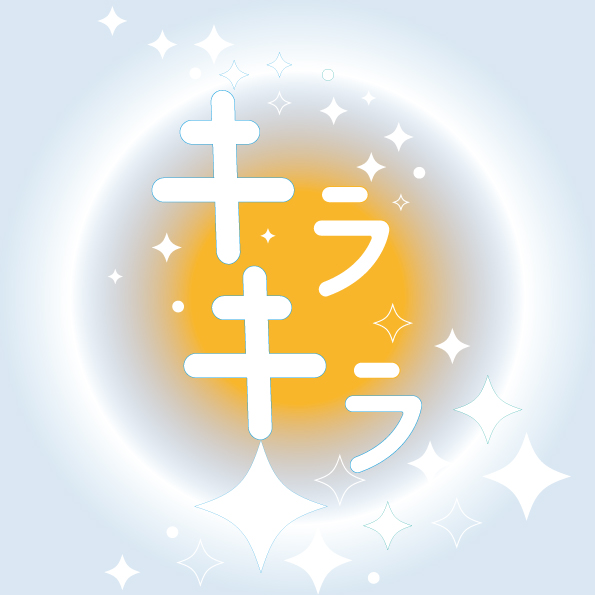
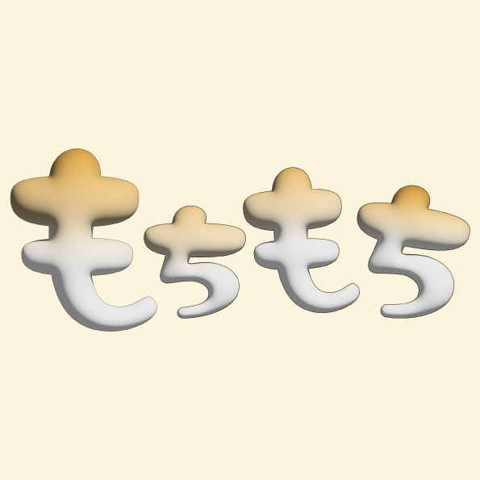
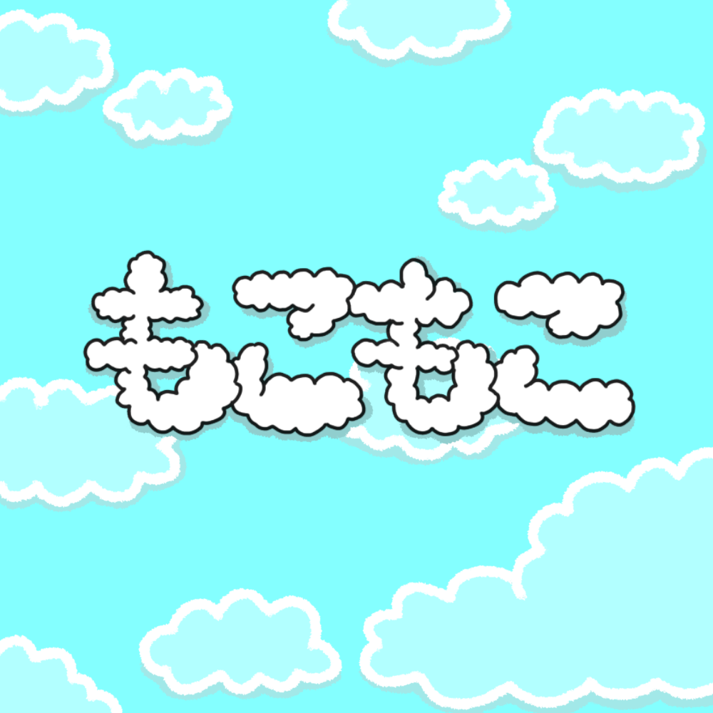
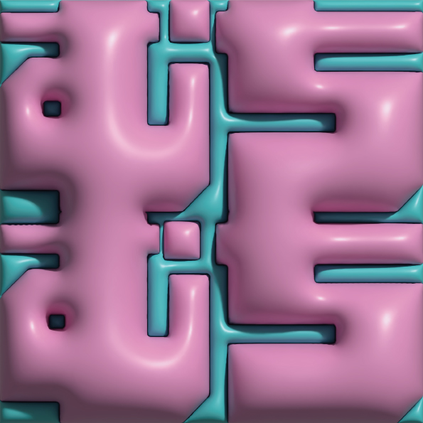
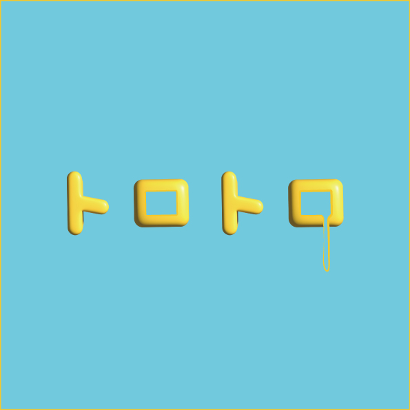
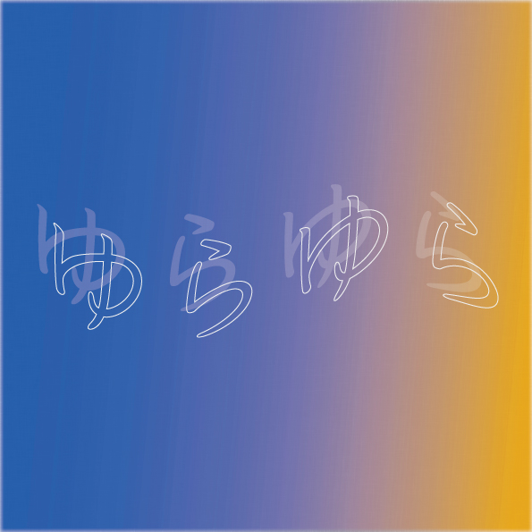

オノマトペ -onomatopoeia-
日本人が普段の会話で何気なく使っているオノマトペを、見て学ぼう。
-Onomatopoeia is a general term for mimic words that express the state of things,onomatopoeia that express sounds in words, and onomatopoeia that represent the voices of people and animals.
Let's watch and learn the onomatopes that Japanese people casually use in everyday conversations.-
A~E

ドロドロ -dorodoro-
English word: thick,viscous,mushy,pulpy,slushy,syrupy,sticky...
例文:昨日の雨で、道がドロドロになっていた。-Yesterday's rain made the road muddy.-
F~J

ギラギラ -giragira-
English word: glisten...
例文:夏の太陽が、ギラギラと照りつけた。-The summer sun glared down on us.-

ぐんぐん -gungun-
English word:steadily,rapidly...
例文: ロープをぐんぐん引っ張る。-keep a steady pull on a rope.-
K~O

English word:Twinkle,Sparkling...
例文:キラキラと輝く星-A sparkling star.-
キラキラ -kirakira-
English word:Twinkle,Sparkling...
例文:キラキラと輝く星-A sparkling star.-
くるくる -kurukuru-
English word:round a round,spin...
例文: 風車の羽がくるくると回る。-The wings of the windmill are spinning round a round.-

English word: springy,chewy...
例文: そのパンはもちもちとした食感だ。-This bread has a chewy texture.-
もちもち -mochimochi-
English word: springy,chewy...
例文: そのパンはもちもちとした食感だ。-This bread has a chewy texture.-

English word: fluffy,foamy,fuzzy...
例文: もこもこの泡で洗顔してください。-Wash your skin with fluffy foam. -
もこもこ -mokomoko-
English word: fluffy,foamy,fuzzy...
例文: もこもこの泡で洗顔してください。-Wash your skin with fluffy foam. -

English word: chubby...
例文:私の息子のほっぺたはむちむちです。-My son has chubby cheeks that everyone adores.-
むちむち -muchimuchi-
English word: chubby...
例文:私の息子のほっぺたはむちむちです。-My son has chubby cheeks that everyone adores.-
P~T

ぱらぱら -parapara-
English word:patter,sprinkle...
例文:雨がぱらぱらと降り始める- It began to sprinkle with rain./The rain came pattering on the ground [roofs].-

ぷかぷか -pukapuka-
English word: Bobbing up and down,Floating gently,Drifting lazily...
例文: それは一日中、ぷかぷか水に浮かんでいました。 -It was bobbing up and down in the water all afternoon.-

English word: somnolently,drowsily...
例文:トロトロになるまで煮込む。-Stew until it becomes mucus-like.-
トロトロ -torotoro-
English word: somnolently,drowsily...
例文:トロトロになるまで煮込む。-Stew until it becomes mucus-like.-
U~Z

English word:wave,swing,wobbling...
例文: 炎がゆらゆらと揺れた。-The flame wavered.-
ゆらゆら -yurayura-
English word:wave,swing,wobbling...
例文: 炎がゆらゆらと揺れた。-The flame wavered.-

ザーザー -za-za--
English word: pouring, pouring down...
例文:雨がザーザー振る。-The rain pours down-